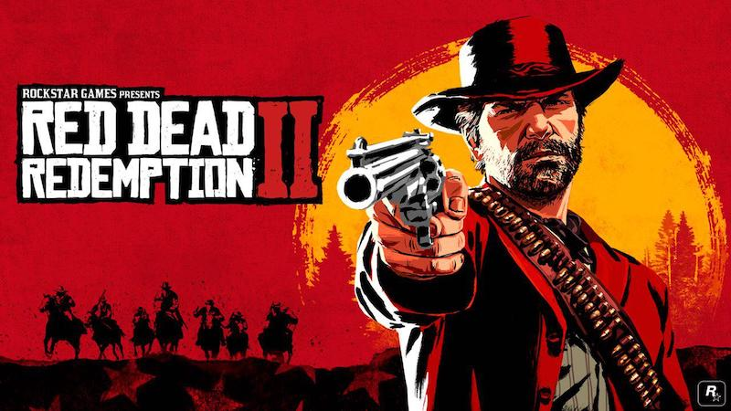

Uma das maiores histórias dos videogames
Voce é Arthur Morgan, e começa com toda a gangue se aventurando em uma montanha que está passando por uma tempestade de neve.
O último assalto feito na cidade de Black Water fracassou e agora eles precisam fugir dos detetives/policiais da agencia
Pinkerton. Não somente eles tem esse problema nas costas,
mas sua grande gangue rival, os O’Driscolls estão na mesma região e certamente arrumarão problemas.
Você é um fora da lei em 1899 onde ladrões estão perdendo mais espaço e a vida da criminalidade está cada vez mais difícil. Sabendo disso, Dutch faz um plano bem simples: “Façamos um grande assalto para podermos viver longe disso tudo”. Com esse direcionamento, você irá procurar diversos assaltos de
banco, trem, pessoas, lojas e muito mais para enriquecer enquanto foge da policia e de seus rivais.

A história de Red Dead Redemption 2 é excelente, as missões principais são um misto de ação com aventura e
o relacionamento com a gangue é maravilhosa!